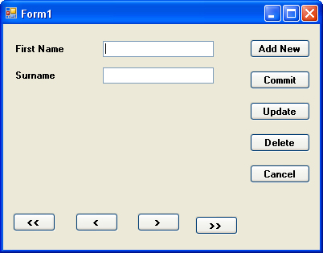
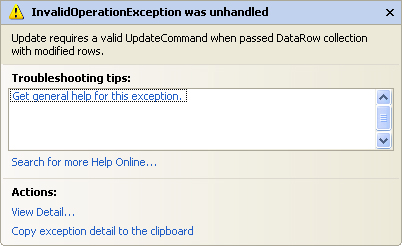

Add, Update and Delete Records
Part of an ongoing tutorial. This lessons is part of an ongoing tutorial. The first part is here:
Coding your own VB .NET database projects
In the last section, you learned how to move through the records in your DataSet, and how to display the records in Textboxes on your form. In this lesson, we'll see how to add new records, how to delete them and how to Update a records.
Before we start the coding for these new buttons, it's important to understand that the DataSet is disconnected from the database. What this means is that if you're adding a new record, you're not adding it to the database: you're adding it to the DataSet! Similarly, if you're updating or Deleting, you doing it to the DataSet, and NOT to the database. After you have made all of your changes, you THEN commit these changes to the database. You do this by issuing a separate command. But we'll see how it all works.
You'll need to add a few more buttons to your form - five of them. Change the Name properties of the new Buttons to the following:
btnAddNew
btnCommit
btnUpdate
btnDelete
btnClear
Change the Text properties of the buttons to Add New Record, Commit Changes, Update Record, Delete Record, and Clear/Cancel. Your form might look something like this:

We'll start with the Update Record button
Updating a Record
To reference a particular column (item) in a row of the DataSet, the code is this:
ds.Tables("AddressBook").Rows(2).Item(1)
That will return whatever is at Item 1 on Row 2.
As well as returning a value, you can also set a value. You do it like this:
ds.Tables("AddressBook").Rows(2).Item(1) = "Jane"
Now Item 1 Row 2 will contain the text "Jane". This won't, however, effect the database! The changes will just get made to the DataSet. To illustrate this, add the following code to your btnUpdate:
ds.Tables("AddressBook").Rows(inc).Item(1) = txtFirstName.Text
ds.Tables("AddressBook").Rows(inc).Item(2) = txtSurname.Text
MsgBox("Data updated")
Run your programme, and click the Next Record button to move to the first record. "John" should be displayed in your first textbox, and "Smith" in the second textbox. Click inside the textboxes and change "John" to "Joan" and "Smith" to "Smithy". (Without the quotes). Now click your Update Record button. Move to the next record by clicking your Next Record button, and then move back to the first record. You should see that the first record is now "Joan Smithy".
Close down your programme, then run it again. Click the Next Record button to move to the first record. It will still be "John Smith". The data you updated has been lost! So here, again, is why:
"Changes are made to the DataSet, and NOT to the Database"
To update the database, you need some extra code. Amend your code to this (the new lines are in bold, red text):
Dim cb As New OleDb.OleDbCommandBuilder(da)
ds.Tables("AddressBook").Rows(inc).Item(1) = txtFirstName.Text
ds.Tables("AddressBook").Rows(inc).Item(2) = txtSurname.Text
da.Update(ds, "AddressBook")
MsgBox("Data updated")
The first new line is this:
Dim cb As New OleDb.OleDbCommandBuilder(da)
To update the database itself, you need something called a Command Builder. The Command Builder will build a SQL string for you. In between round brackets, you type the name of your Data Adapter, da in our case. The command builder is then stored in a variable, which we have called cb.
The second new line is where the action is:
da.Update(ds, "AddressBook")
The da variable is holding our Data Adapter. One of the methods of the
Data Adapter is Update. In between the round brackets, you need the name
of your DataSet (ds, for us). The "AddressBook" part
is optional. It's what we've called our DataSet, and is here to avoid any confusion.
But the Data Adapter will then contact the database. Because we have a Command Builder, the Data Adapter can then update your database with the values from the DataSet.
Without the Command Builder, though, the Data Adapter can't do it's job. Try this. Comment out the Command Builder line (put a single quote before the "D" of Dim). Run your programme again, and then try and update a record. You'll get this error message:

The error is because you haven't got a command builder - a Valid Update Command.
Delete the comment from your Command Builder line and the error message goes
away.
You should now be able to make changes to the database itself (as long as the Access database isn't Read Only).
Try it out. Run your programme, and change one of the records. Click the Update button. Then close the programme down, and load it up again. You should see your new changes displayed in the textboxes.
Exercise
There's one slight problem with the code above, though. Try clicking the Update button before clicking the Next Record button. What happens? Do you know why you get the error message? Write code to stop this happening
In the next part, we'll see how to add a new record.